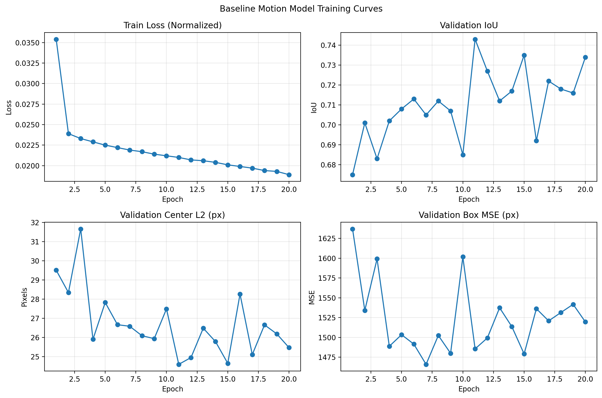

Seeing Through Occlusion: Multi-Modal Motion Modeling for Video Instance Segmentation
A deep learning project on the OVIS dataset that models object motion through heavy occlusion with multimodal recurrent encoders, temporal attention, and an occlusion-aware memory bank.
Overview
This project tackled video instance segmentation under severe occlusion on OVIS, where appearance-based tracking features often fail once objects are partially or fully hidden. Our approach shifted attention toward instance-level motion, predicting where objects should continue moving even when the visual signal becomes weak.
Approach
The work progressed in phases. We began with a single-stream motion LSTM baseline, then moved to a multi-modal architecture that decomposed motion into velocity, shape, acceleration, and context streams. The later model added occlusion-aware temporal attention so the network could selectively trust past frames rather than treating the history uniformly, and we explored a memory-bank extension for longer occlusion gaps.
The strongest checkpoint came from the temporal-attention phase, which improved the validation metrics over both the baseline and the multimodal gated-fusion model. Motion-stratified evaluation also showed why this mattered: simple copy-last-frame heuristics look deceptively strong overall, but learned motion modeling provides clearer gains once object displacement and occlusion difficulty increase.
What I Worked On
- Contributed to the OVIS motion-modeling pipeline and experiment iteration for the course project.
- Helped package the progression from baseline LSTM to multimodal and occlusion-aware variants.
- Used quantitative evaluation and figure generation to compare model behavior across motion and occlusion regimes.
- Integrated project outputs into a presentation-ready story using result plots and qualitative examples.
Key Figures


Model Progression
| Phase | Model | Parameters | Val IoU | Val mAP |
|---|---|---|---|---|
| 1a | Baseline LSTM | 84K | 0.747 | 0.587 |
| 1b | Multi-Modal Gated Fusion LSTM | 198K | 0.756 | 0.603 |
| 2a | Occlusion-Aware Temporal Attention | 310K | 0.762 | 0.614 |
| 2b | Memory Bank + Gap Training | 310K | 0.757 | 0.607 |
Final Presentation
I also included the final presentation PDF directly on the page so the additional graphs and framing are easy to browse from the site.